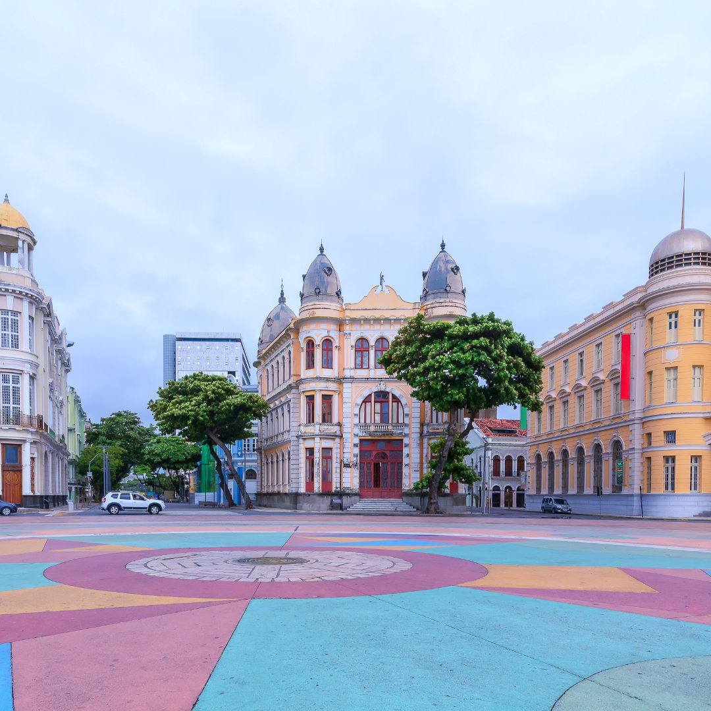
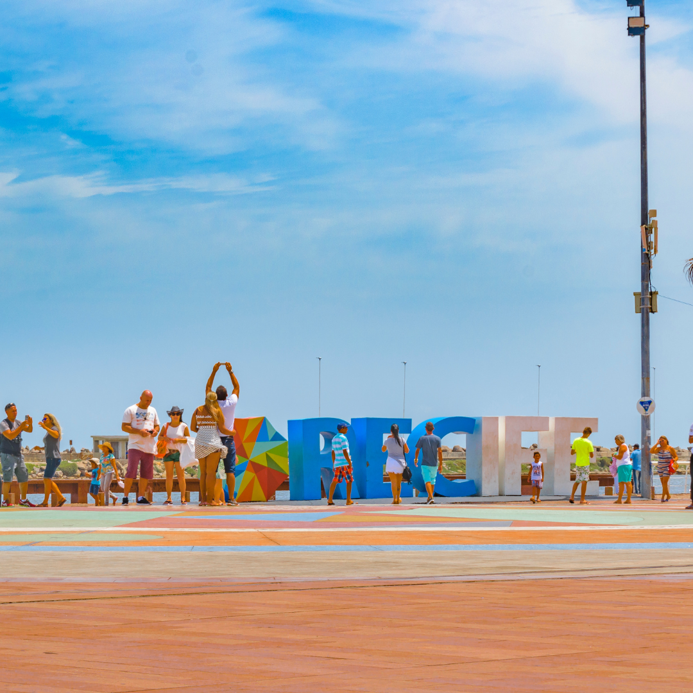

A História do Marco Zero!
O Marco Zero no Recife Antigo é um dos pontos turísticos mais importantes para quem deseja conhecer a capital de Pernambuco. Isso porque é um local de importância histórica que conta o nascimento da cidade e possui forte referência cultural. Além disso, o Marco Zero recebe, anualmente, diversas comemorações e manifestações e também é um lugar muito famoso para quem busca eventos como o Carnaval.
O Marco Zero no Recife Antigo é o lugar de referência onde a cidade nasceu e todas as medidas oficiais de distâncias rodoviárias usam como ponto de partida. Seu nome é, na verdade, Praça Rio Branco e fica ao lado do Porto de Pernambuco.
